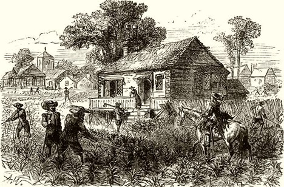

CHAPTER II
19th Century Philippines as Rizal's Context
Contextualization aids in comprehension. To conceptualize something is to place it within its proper and larger setting in which it presents its true and complete meaning. To properly understand Rizal, we should understand the social and political context of the century when Rizal lived. Jose Rizal's life, thoughts, and works must be understood within the broader social, political, and economic context of the 19th century Philippines. This era was marked by significant global changes, including the rise of modernity and the formation of nation-states. In the Philippines, Spanish colonization led to social stratification, political oppression, and economic disparity. Rizal emerged as a key figure in the quest for Filipino autonomy and social justice, reflecting the aspirations of his compatriots for freedom and equality. His writings, notably his novels, "Noli Me Tangere" and "El Filibusterismo," served as catalysts for political awakening and resistance against colonial rule. Understanding the complexities of 19th century Philippine society provides insight into Rizal's enduring legacy and his role in shaping Filipino identity and nationalism.
Economic Context:
• End of Galleon Trade
• Opening of Suez Canal
• Rise of the Export Crop Economy
• Monopolies
End Of The Galleon Trade
Our locals were already trading with China, Japan, Siam (now Thailand), India, Cambodia, Borneo, and the Moluccas (Spice Islands) when the Spanish colonizers came to the Philippines. By 1565, the Spanish government closed the ports of Manila to all countries except Mexico.

The Galleon trade is a ship trade going back and forth between Manila and Acapulco, Mexico. It started when Andres de Urdaneta, in convoy with Miguel Lopez de Legazpi, discovered a return route from Cebu to Mexico in 1565. The trade served as the central income generating business for Spanish colonists in the Philippines. The Manila Galleon trade facilitated the exchange of various products between Asia and the Americas, including:
From the Philippines to Mexico: Mango de Manila, tamarind, rice, carabao, cockfighting, Chinese tea, textiles, fireworks display, and tuba (coconut wine).
From Mexico to the Philippines: Guava, avocado, papaya, pineapple, horses, and cattle.
The trade also fostered intercultural exchanges between Asia, Spanish America, and Europe. Initially, Chinese merchants played a significant role in Manila's trade hub, which led to tensions and conflicts with Spanish authorities. Despite initial challenges, coexistence between the Spanish and Chinese communities developed over time.
Moreover, the Manila Galleon trade facilitated the introduction of modern and liberal ideas into the Philippines, eventually inspiring movements for independence from Spanish colonial rule. The trade route met its end in September 14, 1815 with Mexico's war of independence, concluding a 250-year exchange that left a lasting impact on the cultural and economic landscapes of both the Philippines and the Americas. Previously. the Philippines was governed by Spain from Mexico. The Spanish Crown took direct control of the Philippines and administered it directly from Madrid. The opening of the Suez Canal and the invention of steam ships, which lessened the travel time from Spain to the country to 40 days, made this more convenient.
Opening of the Suez Canal
The Suez Canal is an artificial waterway in Egypt which connects the Mediterranean Sea to the Red Sea through the isthmus of Suez. It was constructed by the Suez Canal Company between 1859 and 1869 under the leadership of French diplomat Ferdinand de Lesseps. The Suez Canal was officially opened on November 17, 1869.
With its opening, the distance of travel between Europe and the Philippines was considerably abbreviated, bringing the country virtually closer to Spain. With the Suez Canal, the voyage was lessened from more than three months to only 32 to 40 days.
It became a huge advantage in commercial enterprises especially between Europe and East Asia. It also served as a significant factor that enabled the growth of nationalistic desires of Jose Rizal and other Filipino ilustrados. The Suez Canal expedited the importation of commercial goods and intellectual products like books and newspapers containing liberal ideas from America and Europe into the Philippines. These liberal ideas influenced Jose Rizal and other Filipino reformists, shaping their perspectives on governance and nationhood. The canal also attracted Spaniards and Europeans with liberal inclinations to the Philippines, fostering exchanges of ideas and social interactions. Additionally, the accessibility provided by the Suez Canal encouraged ilustrados like Rizal to pursue education abroad, where they were exposed to scientific and liberal education, further shaping their views on politics and government. In summary, the Suez Canal played a significant role in catalyzing intellectual exchange and inspiring the pursuit of social and political change in the Philippines during Rizal's time.
Rise Of the Export Crop Economy
During the Galleon Trade, which was a significant maritime trading period between Manila and Mexico, most Spaniards in the Philippines were primarily involved in maritime commerce. However, the exploitation of the Philippines' natural resources and the establishment of an export crop economy became prominent features only in the 19th century, following the end of the Galleon Trade.
Some years after the end of the Galleon Trade, between 1820 and 1870, the Philippines experienced the development of an export crop economy, with products like sugar, Manila hemp, and coffee being produced for foreign markets. This period also saw the influx of imported European factory goods into various parts of the Philippines.
The growth of the export crop industry created opportunities for the expanding Chinese population in the Philippines. Many Chinese migrants, who were previously concentrated in Manila, relocated to provinces known for producing export crops, such as hemp-producing areas in southeastern Luzon and the eastern Visayas, sugar areas in the western Visayas, and tobacco provinces in northeastern Luzon.
The development of the export crop industry was primarily driven by the commercial activities of North European and North American merchants. These merchants provided capital, organization, and access to foreign markets and imports. However, since their operations were based in port cities like Manila, they relied on agents, primarily Chinese, to distribute imports inland and procure goods for export.
Monopolies
Another main source of wealth during the post-galleon era was monopoly contracting. After 1850, government monopoly contracts for the collection of revenues were opened to foreigners for the first time. The Chinese instantly took advantage of this commercial opportunity. The opium monopoly was a specifically profitable one. During the 1840s, the Spanish government legalized the use of opium (provided it was limited to Chinese) and a government monopoly of opium importation and sales was created. The majority of contracts in the monopoly were held by the Chinese. But even before 1850, monopolies on some products had been established which were basically controlled by the colonial government. There were monopolies of special crops and items, such as spirituous liquors (1712-1864), betel nut (1764), tobacco (1782-1882), and explosives (1805-1864). Among those monopolies, the most controversial and oppressive to locals was perhaps the tobacco monopoly.

On March 1, 1782, GovernorGeneral Jose Basco placed the tobacco industry under government control, thereby establishing the tobacco monopoly. It aimed to increase government revenues to maintain the colony. An order was issued for the widespread cultivation of tobacco in the provinces of Cagayan Valley, Ilocos Norte, Ilocos Sur, La Union, Isabela, Abra, Nueva Ecija, and Marinduque. These 8 provinces planted nothing but tobacco and sold their produce only to the government at a pre-designated price, leaving little to no profit for the local farmers. The system set the required number of tobacco plants that must be sold to them by each family. The tobacco monopoly positively raised revenues for the government and made Philippine tobacco prominent all over Asia and some parts of Europe. Negatively, the monopoly brought food shortages since the planting of basic crops like rice was neglected and abandoned. The tobacco monopoly was abolished in 1882. (Some references state that the tobacco monopoly in the Philippines was from 1781 to 1881, not 1782 to 1882, although most authors agree that it lasted for exactly 100 years) A century of hardship and social injustice caused by the tobacco monopoly prompted Filipinos in general and Novo Ecijanos in particular, to seek freedom from colonial bondage.
Social Background
• Education in the 19th Century
• Rise of the Chinese Mestizo
• Rise of the Inquilinosy
Education in the 19TH Century
With the coming of the Spanish colonizers, the European system of education was introduced to the archipelago. Schools were established and run by Catholic missionaries. With the aim to convert the natives to the Catholic faith and make them obedient, religion was made a compulsory subject at all levels.
King Philip II’s Leyes de Indias (Laws of the Indies) mandated the Spanish authorities in the Philippines to educate the locals, to teach them how to read, and write, and learn Spanish. The Spanish missionaries thus established schools, somewhat educated the natives, but did not seriously teach them the Spanish language fearing that the Indios would become so knowledgeable and turn out to be their coʻequal Less than one-fifth of those who went to school could read and write Spanish and far fewer could speak the language properly.
The first formal schools were the parochial schools opened in their parishes by missionaries such as Augustinians, Franciscans, Jesuits, and Dominicans. Aside from religion, native children were taught reading, writing, arithmetic, and some vocational and practical arts subjects. Aside from the Christian Doctrines, Latin (the official language of the Catholic Church) was also taught to the students instead of Spanish. The Spanish friars believed that the natives would not be able to match their skills, and so one way for the locals to learn fast was to use strict discipline such as applying corporal punishment.
Later on, colleges were established for boys and girls. The subjects taught to college students include history, geography, Latin, mathematics, and philosophy.
University education was opened in the country during the early 17th century. Initially, colleges and universities were open only to the Spaniards and those with Spanish blood (mestizos). It was only in the 19th century that these universities started accepting native Filipinos.
In 1863, a royal decree mandated the establishment of a public school system in the Philippines, transitioning education from religious authorities to government administration by the late 19th century. Initially exclusive to Spaniards and Spanish mestizos, universities gradually opened to natives, primarily sons of wealthy Indio families, although the church retained control over the curriculum.
Some Filipino illustrados in Madrid:
Rizal is in the second row, fifth from right.
The emergence of an educated native class, known as the ilustrados, resulted from this educational shift. Despite their wealth and education, ilustrados were considered inferior by Spaniards. Their aspiration was to achieve parity with Spaniards.
The opening of the Suez Canal in the late 19th century facilitated faster, easier, and more affordable travel to Europe, particularly Madrid and Barcelona. Many Filipinos seized this opportunity for higher education, where they were exposed to liberal ideas and nationalism. This enlightenment sparked the Philippine independence movement, with Spanish serving as the primary medium of communication.
This educated elite, including José Rizal, a prominent ilustrado, formed the Propaganda Movement. Rizal, through his Spanish-language novels, inspired a fervent desire for freedom and independence among Filipinos, paving the way for the nationalist struggle against Spanish colonial rule.
The Rise Of The Chinese Mestizo
In the 19th century, the Philippines experienced significant economic and political changes influenced by developments in Europe. The abolition of the Manila-Acapulco Galleon monopoly opened Manila to foreign merchants by the mid-1830s, leading to increased trade in products like sugar and hemp. The opening of the Suez Canal further boosted exports to Europe. This economic growth saw the emergence of a new class of landowners, particularly Chinese-Filipino mestizos, who owned haciendas producing agricultural goods.
This period also witnessed the rise of a wealthy and influential middle class in the Philippines, comprised of Spanish and Chinese mestizos. Among them were the ilustrados, respected members of their communities who sought education in Spain and Europe. Many ilustrados became involved in movements like freemasonry and the Propaganda Movement, advocating for reform and change. José Rizal emerged as a prominent leader in this movement.
Overall, the 19th century saw the rise of a dynamic middle class in the Philippines, whose members played pivotal roles in shaping the country's social, political, and economic landscape.
The Rise of the Inquilinos
At least in modern Spanish. the term inquilino has the same meaning as the English "tenant”. The 19th century inquilino system in the Philippines is better understood as a qualified system of tenancy, or the right to use land in exchange for rent. The end of the Galleon trade and the opening of Suez Canal gave way for more extensive rice cultivation and production of crops such as sugar cane and tobacco, making many estates turn to the inquilino system of land tenure. Under this system, absentee landlords, often friars or secular Spanish, appointed administrators, typically Spanish mestizos or Filipino lay brothers, to manage estates. Administrators collected rent from inquilinos, organized harvests, and handled sales. Some inquilinos acted as overlords, making unreasonable demands from farm workers.
Inquilinos paid fixed rent based on land size and quality. As friar estates expanded, inquilinos sub-leased parcels to sharecroppers, becoming profitable ventures. Some inquilinos ceased farming entirely, leaving it to sub-tenants.
Disputes over communal lands, grazing areas, and boundaries between villages and estates were common. Conflicts between estate owners and workers arose due to excessive taxes, declining sharing agreements, labor demands, and crop price fixing.
Peasant protests against alleged abuses and land usurpation by religious orders like the Jesuits, Dominicans, Augustinians, and Recollects were frequent. Inquilinos, with their relative freedom through sub-leasing, often led these movements.
In summary, the inquilino system was a complex arrangement that defined land tenure and agricultural relationships in 19th-century Philippines, marked by conflicts, protests, and shifting power dynamics between landlords, administrators, inquilinos, and sharecroppers.
Political Landscape
• Liberalism
• Impact of the Bourbon Reforms
• Cadiz Constitution
Liberalism
Liberalism is a worldview founded on the ideas of freedom and equality. It includes a wide range of political philosophies that consider individual liberty to be the most significant political goal. Liberals believe that government is necessary to protect individuals from being abused by others though they are also aware that government itself can pose a threat to liberty.
The French Revolution (1789-1799) started a political revolution in Europe and in some other parts of the globe. “Having Liberty. Equality, and Fraternity" as its battle cry this revolution became a period of fundamental change in the political history of France as the French government structure was changed from absolute monarchy to a more liberal government system founded on the principles of citizenship and inalienable rights.
This revolution catalyzed political upheavals across Europe, including Spain, leading to a century of turbulence characterized by changes in governments, conflicts between liberals and conservatives, and struggles against the influence of the Catholic Church.
In Spain, liberals viewed the Catholic Church as an obstacle to reforms and sought to diminish its political and educational power, leading to a movement known as anti-clericalism. These liberal reforms in Spain reverberated in the Philippines, challenging the old colonial system and introducing notions of reform, equality, and emancipation.
The opening of the Philippines to world trade in the 19th century facilitated the influx of liberal ideas from America and Europe, carried by ships and foreign visitors. The ideologies of the American and French Revolutions, along with works by philosophers like Rousseau, Locke, Paine, and Jefferson, began to influence local reformists, including José Rizal.
The construction of the Suez Canal further eased the importation of literature with liberal ideas, impacting the beliefs of Filipino intellectuals like Rizal. Moreover, liberal Spaniards and Europeans, attracted by the canal's convenience, arrived in the Philippines, fostering cultural exchange and influencing local perspectives on politics and nationhood.
Gov. Gen. Carlos Maria De la Torre:
”First liberal governor general in the Philippines”.
The Philippines experienced liberalism firsthand under Governor-General Carlos Maria De la Torre, known for his liberal and democratic governance from 1869 to 1871. De la Torre's rule encouraged freedom of speech and the press, abolished censorship, and addressed agrarian issues, paving the way for a more democratic society. His leadership provided Filipinos, including Rizal, with a glimpse of democratic governance and inspired aspirations for social and political change.
In summary, liberalism profoundly influenced the political landscape of the Philippines in the 19th century, shaping the beliefs and actions of local intellectuals and reformists like José Rizal, and paving the way for the country's eventual quest for independence and democratic governance.
The Impact of the Bourbon Reforms
The Bourbon Reforms, initiated by Spanish Bourbon kings including Philip V, Ferdinand VI, Charles III, and Charles IV, aimed to overhaul and modernize the Spanish empire. These reforms targeted various aspects such as curtail contraband, controlling transatlantic trade, reducing the influence of the Catholic Church, restructuring finances, and enhancing administrative control.

Bourbon King Philip V (b. 1700-1746)
Ferdinand VI (r. 1746-1759)
Charles III (r. 1750-1788)
Charles IV (r. 1988-1807)
Although the Bourbon Reforms were intended to benefit the Philippines, being a Spanish colony from 1565 to 1898, their impact was limited due to geographical distance and logistical challenges in implementation. The effectiveness of these reforms was also hindered by ideological inconsistencies and conflicting objectives among policymakers in Madrid. Additionally, European conflicts often diverted attention and resources away from reform efforts.
The impact of the Bourbon Reforms varied across the Spanish empire. While regions like Mexico experienced significant policy innovations, areas like the Philippines, Chile, and New Granada saw more limited effects. Despite debates among historians regarding the timing and effectiveness of the reforms, they did contribute to the idea that colonization could occur with less intervention from the Catholic Church, particularly influencing the perceptions of natives in the Philippines.
In summary, while the Bourbon Reforms aimed to modernize and centralize governance across the Spanish empire, their execution faced challenges and yielded diverse outcomes, with varying levels of impact across different regions.
Cadiz Constitution
During the Napoleonic occupation of Spain, a liberal constitution was promulgated in Cadiz in March 1812. The Cadiz constitution was the first constitution in Europe to deal with national sovereignty, recognizing the sovereignty as coming from the people and not from the king.
Drafted by elected representatives, it was implemented in territories under Spanish control, including the Philippines. Unlike the French constitution, it had a universal character, applying to citizens both in Europe and overseas territories.
Protected by the British Navy, a group of around 300 deputies from Spain, Spanish America, and the Philippines convened in Cádiz to promulgate the liberal constitution. It recognized national sovereignty as emanating from the people, established universal male suffrage, constitutional monarchy, freedom of the press, and advocated for land reform and free enterprise.
In the Philippines, Governor General Manuel Gonzales Aquilar oversaw the election of Manila officials, resulting in the selection of Don Ventura de los Reyes as deputy. Don Ventura, born in Vigan to poor Ilocano parents, was involved in the Ilocos revolt led by Diego Silang. He signed the Constitution, which granted colonies representation in the Spanish Cortes.
Despite efforts to establish a constitutional monarchy, King Fernando VII declared the Cadiz Constitution invalid in May 1814, restoring absolutism. However, the Cadiz period was significant in the political history of Spanish-speaking territories. In the Philippines, the Constitution exempted natives from tributes and public services, embodying principles of equality and liberty.
For the freedom-loving people of the Philippines in the 19th century, the Cadiz Constitution was influential, vesting sovereignty in the people, recognizing equality, individual liberty, and granting suffrage rights. Despite its eventual annulment, its principles left a lasting impact on the aspirations of Filipinos for liberty and self-governance.
Seeing Rizal’s Life in His Society
The excerpt discusses the concept of the "sociological imagination" and its relevance to understanding the life and works of Jose Rizal in the context of 19th-century Philippines. The sociological imagination refers to the ability to perceive one's personal experiences and challenges within the broader historical and societal context.
Rizal, as a figure of historical significance, possessed not only knowledge about his society but also the ability to critically analyze and interpret the events around him. This quality of mind allowed him to understand how societal forces shaped his own life and the lives of others. With his sociological imagination, Rizal could comprehend the interconnectedness of global issues and the historical context in which they unfolded.
The text suggests that individuals with the sociological imagination can navigate their own experiences by recognizing the broader historical forces at play. They understand that their personal circumstances are influenced by larger societal structures and historical processes. This awareness enables them to respond effectively to the challenges they face and to contribute positively to society.
Rizal's ability to understand the societal forces shaping his life allowed him to respond in ways that benefited others. He recognized his place within the larger scheme of things and utilized his knowledge and understanding to advocate for social change and justice in the Philippines.
Overall, the sociological imagination is portrayed as a crucial tool for individuals to comprehend the complexities of society and to navigate their roles within it, as exemplified by the life and works of Jose Rizal.